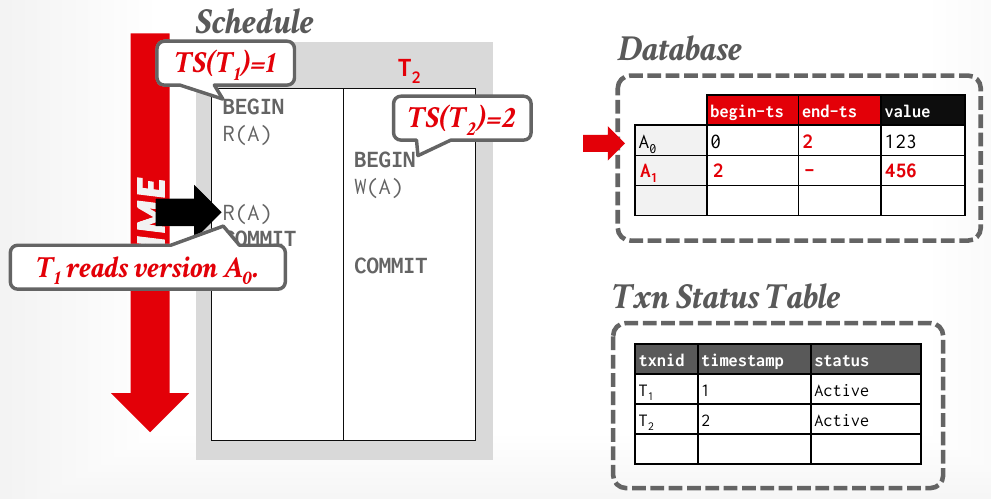
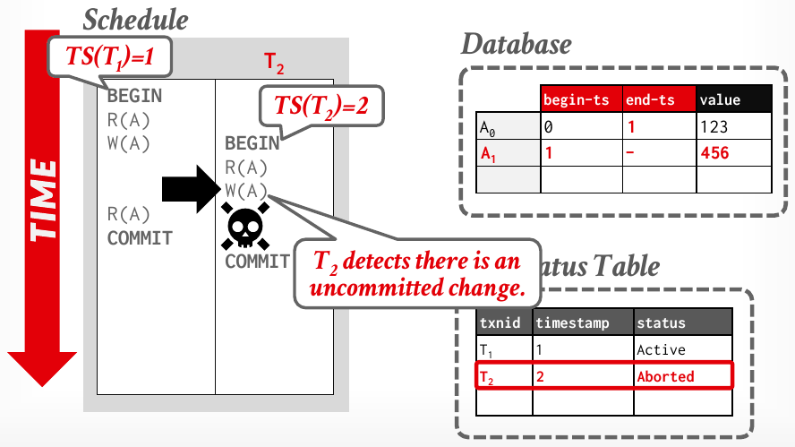
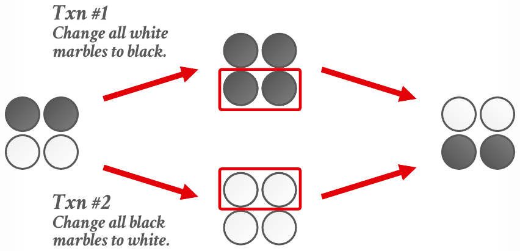
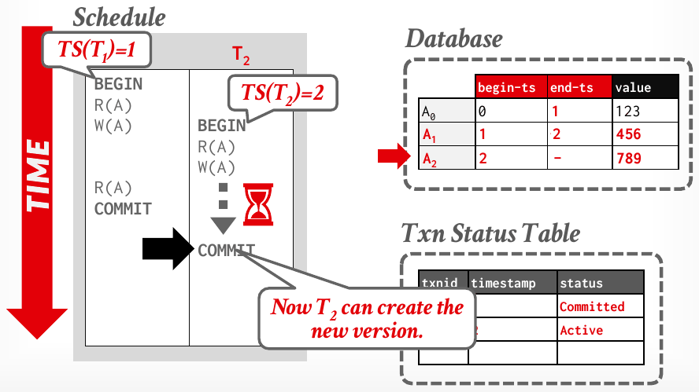

Database Internals in Go · Unit 7 · Lesson 5
Multi-Version Concurrency Control: Snapshots and Write Skew
Work out which version of a tuple a transaction sees from its timestamp, predict when a second writer aborts or waits, and explain why snapshot isolation still lets two transactions produce a result no serial order gives.
Every protocol so far kept one copy of each object. Under 2PL a reader and a writer of the same tuple wait for each other; under OCC they run freely but one of them may abort at validation. Multi-version concurrency control keeps several versions of each tuple instead, so a reader can use an older version while a writer creates a newer one. The Lecture #20 notes call it the most widely used scheme in DBMSs, used in almost every new DBMS of the last ten years, and Project 4 builds it into BusTub. This lesson covers what MVCC guarantees and where those guarantees stop; the next one covers how the versions are stored, cleaned up and indexed.
Unit 7, Lesson 3: in Lecture #19's OCC example, A = 123 with W-TS 0. T1 begins and reads A; T2 begins, reads A, validates and commits; then T1 writes A = 456 in its workspace, validates and commits. What is in the database at the end?
Unit 1, Lesson 3: a log-structured storage manager answers GET(k). Where does it look, and which record decides the answer?
Unit 7, Lesson 1: in Lecture #17's Example #2, T1 reads and writes A; T3 reads and writes A and commits; T2 reads and writes B and commits; then T1 reads and writes B. Which serial order is conflict-equivalent to this schedule?
Many versions of one tuple
Slide 4 defines multi-version concurrency control (MVCC): the DBMS maintains multiple physical versions of a single logical object.
- When a transaction writes an object, the DBMS creates a new version of it instead of overwriting it.
- When a transaction reads an object, it reads the newest version that existed when the transaction started.
- Timestamps decide which versions a transaction can see.
The slide's last line states the payoff: writers do not block readers, and readers do not block writers. A transaction can modify an object while others go on reading its old version. Writers can still block other writers: the notes say two transactions writing the same object still conflict. The notes add that a read-only transaction can read a consistent snapshot of the database without taking locks of any kind.
Old versions have a second use. If the DBMS never removes them, it can answer time-travel queries, which the notes describe as queries on the database as it was at some earlier time, for example three hours ago. Removing versions no one needs is garbage collection, one of the next lesson's topics.
The idea is old. Slide 5 traces it to a 1978 MIT PhD dissertation; the first implementations were Rdb/VMS and InterBase at DEC in the early 1980s, both by Jim Starkey. Rdb/VMS is now Oracle Rdb, and InterBase was open-sourced as Firebird.
Versions, timestamps and visibility
The lecture's examples, which the slides label "Illustrative Only", give each transaction one timestamp when it begins and each version two:
- A version's begin-ts is the timestamp of the transaction that created it.
- Its end-ts is the timestamp of the transaction that replaced it with a newer version, or empty while it is the newest.
- A transaction status table records each transaction's id, timestamp and status: Active, Committed or Aborted. The notes say a typical design takes a snapshot of this table when a transaction starts and uses it to decide which versions the transaction can see.
Example #1 on slide 6: the database holds A0 = 123 with begin-ts 0. T1 begins with TS 1 and reads A0. T2 begins with TS 2 and writes A: it creates version A1 = 456 with begin-ts 2 and sets A0's end-ts to 2. When T1 reads A again, it gets A0 once more. A0's range [0, 2) contains T1's timestamp, and A1 begins at 2, after T1. T1's two reads agree, and neither transaction waited for the other.

The slides' tables show a new version's begin-ts, and the old version's end-ts, as soon as the writer creates the version, before the writer commits. Other transactions must not treat those numbers as final: a version whose creator hasn't committed is invisible to everyone else, and the old version stays visible until the writer commits. The rule this course uses is that a transaction sees the newest committed version whose begin-ts is at or before its own timestamp, or its own write if it has made one. Project 4 makes this unambiguous with temporary timestamps, as you'll see at the end of the lesson.
#20 Multi-Version Concurrency Control, "MVCC example" (12:03), slides 6–7: begin-ts and end-ts, the status table, Example #1, and in the next chapters the visibility rules and the writer conflict of Example #2.
Two writers: the first one wins
Example #2 on slide 7 adds a second writer. T1 (TS 1) reads A and writes it: A1 = 456 appears with begin-ts 1, and A0's end-ts becomes 1. T2 (TS 2) begins and reads A. T1 hasn't committed, so T2's read returns A0; slide 13 spells this out for the same schedule. Then T2 tries to write A. The slide's annotation: "T2 detects there is an uncommitted change." T2 is aborted. T1 reads A again, gets the A1 it wrote itself, and commits.

This is first-writer-wins: when two concurrent transactions write the same object, the one that wrote first keeps going and the later one aborts. The L20 notes state it directly ("If two transactions update the same object, the first writer wins"), and slide 31 repeats it.
Pitfall
Slide 8 says that under snapshot isolation "last writer wins". That contradicts the deck's own Example #2, slide 31, the notes and Project 4, which all abort the second writer. Read slide 8 as first writer wins.
Snapshot isolation
MVCC with these rules gives snapshot isolation (SI). Slide 8: when a transaction starts, it sees a consistent snapshot of the database as it existed at that moment. There are no torn writes from active transactions: a transaction sees all of another transaction's writes or none of them. If two transactions update the same object, the first writer wins. The notes add that a snapshot contains only values from committed transactions, and that a transaction's writes stay in its private workspace, or in storage marked with transaction metadata, until it commits. That makes SI ideal for read-only transactions, which never wait for writers.
SI is not serializable. Slide 8 ends: "SI is susceptible to the Write Skew Anomaly." Slide 9 shows it with four marbles, two black and two white, and two transactions that run at the same time:
- Txn #1 changes all white marbles to black.
- Txn #2 changes all black marbles to white.
Run serially, they always end with one colour. Txn #1 then Txn #2 leaves four white marbles; Txn #2 then Txn #1 leaves four black ones. Under SI both transactions read the same snapshot. Txn #1 finds the two white marbles and blackens them; Txn #2 finds the two black marbles and whitens them. Their write sets are disjoint, so first-writer-wins never fires, and both commit. The result is two white and two black marbles, with the colours swapped, which neither serial order produces.

Write skew is that pattern: two transactions read overlapping data, each writes something the other read, their write sets don't overlap, and the combined result matches no serial order. First-writer-wins only compares writes with writes, so it can't see the problem. That is why Lesson 4's isolation hierarchy puts SNAPSHOT ISOLATION below SERIALIZABLE, on a branch of its own beside REPEATABLE READS.
#20 Multi-Version Concurrency Control, "Snapshot isolation" (22:25), slides 8–9: what a snapshot guarantees and the marble example of write skew.
MVCC is a whole design
Slide 10: "MVCC is more than just a concurrency control protocol. It completely affects how the DBMS manages transactions and the database." Slide 11 lists five design decisions: the concurrency control protocol, version storage, garbage collection, index management and deletes. This lesson takes the first; the next lesson takes the other four.
Versions alone don't settle what happens when two writers meet, so MVCC runs on top of one of the protocols from earlier lessons (slide 12):
- Timestamp ordering: transactions get timestamps that determine the serial order.
- OCC: the three-phase protocol of Lesson 3, with the private workspace holding the new versions.
- Two-phase locking: a transaction acquires the appropriate lock on the physical version before it can read or write the logical tuple.
Slide 13 reruns Example #2 under MVCC with 2PL, and the second writer waits instead of aborting. T1 creates A1 as before. T2 reads A0, because T1 hasn't committed. T2's write needs the write lock on A, which T1 holds, so T2 stalls until T1 commits. Then T2 creates its own version: A1's range becomes [1, 2) and A2 = 789 begins at 2.

Real systems use all three. Slide 33's survey lists Oracle, MySQL-InnoDB, SAP HANA and CockroachDB as MV-2PL; Microsoft's Hekaton, SingleStore, DuckDB and HyPer as MV-OCC; and Postgres as MV-2PL/MV-TO.
#20 Multi-Version Concurrency Control, "MVCC design decisions" (28:35), slides 10–13: the five decisions, the protocol choice and the MVCC-with-2PL rerun of Example #2. The video then spends about 18 minutes on live Postgres and MySQL demonstrations.
What Project 4 builds
Project 4 adds optimistic multi-version concurrency control (MVOCC) to BusTub; the writeup notes that the same high-level protocol is used in HyPer and DuckDB, both MV-OCC in the survey. It differs from the slides' examples in a few ways worth knowing before Unit 8.
Two timestamps per transaction
The slides give each transaction one timestamp. BusTub gives it two:
- A read timestamp, assigned at begin and equal to the commit timestamp of the most recently committed transaction. It determines the latest version of a tuple the transaction can see.
- A commit timestamp, assigned at commit from a monotonically increasing counter. It determines the serialization order, and every version a transaction writes is stamped with it.
Visibility becomes: for each tuple, read the newest version whose timestamp is at or below your read timestamp. The writeup's example has versions of A at timestamps 1, 2, 3 and 4, of B at 1, 3 and 4, of C at 1, 2 and 4, and a single version of D at 3. A transaction with read timestamp 3 sees A3, B3, C2 and D3. C has no version at 3, so C2 is the newest it may read.
Temporary timestamps
An uncommitted writer stamps the tuple it changed with TXN_START_ID plus its transaction id, where TXN_START_ID is 262 (common.TxnStartID = 1 << 62 in the Go port). That number is larger than any commit timestamp, so no read timestamp ever reaches it and no other transaction sees the uncommitted version. It plays the role of the "uncommitted change" in Example #2. The writeup uses bit 62 instead of 63 so that temporary timestamps still compare correctly with plain < and >.
First writer wins
If a tuple is being modified by an uncommitted transaction, no other transaction may modify it. A transaction that finds a committed version newer than its read timestamp also may not overwrite it. Either way it becomes tainted (TxnTainted in the Go port), the write fails with an execution exception, and the transaction must abort. You implement snapshot isolation first; SERIALIZABLE comes later, using the OCC-style predicate check from Lesson 4. The watermark, the lowest read timestamp still in use, decides which old versions anyone can still see, and it belongs to the next lesson's garbage collection.
Work it out
-
What to think about
Each write by a different transaction adds a version and closes the previous one's range. Which transactions wrote A, and in what order did they get to do it?
The method
Start from A0 = 123 with begin-ts 0. Add T1's version, then T2's after T1 commits. A version's end-ts is the begin-ts of the version that replaced it. A transaction reads its own write if it has one, otherwise the newest committed version that began at or before its timestamp.
The result
A0: [0, 1), 123. A1: [1, 2), 456. A2: begin-ts 2, no end-ts yet, 789. T1's second read returned A1, its own write. A transaction with TS 3 that starts after T2 commits reads A2 = 789.
-
What to think about
What does a transaction see for a tuple whose oldest version is newer than its read timestamp?
The method
For each tuple, take the largest version timestamp that is at most the read timestamp. If there is none, the tuple doesn't exist yet for that transaction.
The result
Read timestamp 1: A1, B1 and C1, and no D, which was created at 3. Read timestamp 4: A4, B4, C4 and D3, the newest version of every tuple.
Check your understanding
Lecture #20, Example #1: T1 (TS 1) reads A. Then T2 (TS 2) writes A, creating A1 with begin-ts 2 and setting A0's end-ts to 2. Which version does T1's second read of A return?
Lecture #20, Example #2: T1 (TS 1) has written A1 and has not committed. T2 (TS 2) reads A and then tries to write A. With no locks involved, what happens?
Lecture #20, slide 13 runs the same schedule as Example #2 on MVCC with two-phase locking. What happens to T2?
Lecture #20, slide 9: two black and two white marbles. Under snapshot isolation, Txn #1 changes all white marbles to black while Txn #2 changes all black marbles to white, at the same time. What is the result?
Project 4 writeup: tuple A has versions with commit timestamps 1, 2, 3 and 4; B has 1, 3 and 4; C has 1, 2 and 4; D has one version, at 3. Which versions does a transaction with read timestamp 2 see?
Primary sources: CMU 15-445/645 Fall 2025 Lecture #20 slides 2–13 and 31–33 and notes (section 1); Lecture #19 slide 45; the Project #4 writeup (Background, Task 1.1, Task 2.2 and Task 3.4); BusTub src/include/concurrency/transaction.h and src/include/common/config.h at commit d49b823.